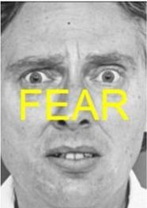

<!DOCTYPE html>
<html>

<head>
    <title>My experiment</title>
    <script src="jspsych-master/jspsych.js"></script>
    <script src="jspsych-master/plugins/jspsych-html-keyboard-response.js"></script>
    <script src="jspsych-master/plugins/jspsych-image-keyboard-response.js"></script>
    <link href="jspsych-master/css/jspsych.css" rel="stylesheet" type="text/css">
</head>

<body></body>
<script>

    /* create timeline */
    var timeline = [];

    /* define welcome message trial */
    var welcome = {
        type: "html-keyboard-response",
        stimulus: "Welcome to the experiment. Press any key to begin."
    };
    timeline.push(welcome);

    /* define instructions trial */
    var instructions = {
        type: "html-keyboard-response",
        stimulus: "<p>In this experiment, a face  will appear in the center " +
            "of the screen.</p><p>If the face is <strong>fearful</strong>, " +
            "press the letter F on the keyboard as fast as you can.</p>" +
            "<p>If the face is <strong>happy</strong>, press the letter H " +
            "as fast as you can.</p>" +
            "<div style='width: 700px;'>" +
            "<div style='float: left;'></img>" +
            "<p class='small'><strong>Press the F key</strong></p></div>" +
            "<div class='float: right;'></img>" +
            "<p class='small'><strong>Press the H key</strong></p></div>" +
            "</div>" +
            "<p>Press any key to begin.</p>",
        post_trial_gap: 200
    };
    timeline.push(instructions);

    /* test trials */

    var test_stimuli = [
        { stimulus: "img/img_c_f_f.jpg", data: { test_part: 'test', correct_response: 'f' } },
        { stimulus: "img/img_c_h_h.jpg", data: { test_part: 'test', correct_response: 'h' } },
        { stimulus: "img/img_i_f_h.jpg", data: { test_part: 'test', correct_response: 'f' } },
        { stimulus: "img/img_i_h_f.jpg", data: { test_part: 'test', correct_response: 'h' } }
    ];

    var fixation = {
        type: 'html-keyboard-response',
        stimulus: '<div style="font-size:60px;">+</div>',
        choices: jsPsych.NO_KEYS,
        /*trial_duration: 500,*/
        trial_duration: function () {
            return jsPsych.randomization.sampleWithoutReplacement([1000, 1500, 2000, 2500, 3000 , 3500 ], 1)[0];
        },
        data: { test_part: 'fixation' }
    }

    var test = {
        type: "image-keyboard-response",
        stimulus: jsPsych.timelineVariable('stimulus'),
        choices: ['f', 'h'],
        response_ends_trial: false,
        trial_duration: function () {
            return jsPsych.randomization.sampleWithoutReplacement([1000], 1)[0];
        },

        data: jsPsych.timelineVariable('data'),
        on_finish: function (data) {
            /*data.correct = jsPsych.pluginAPI.convertKeyCharacterToKeyCode(data.key_press) == jsPsych.pluginAPI.convertKeyCharacterToKeyCode(data.correct_response);*/
        data.correct = data.key_press == data.correct_response;
        },
    }

    var test_procedure = {
        timeline: [fixation, test],
        timeline_variables: test_stimuli,
        repetitions: 2,
        randomize_order: true
    }
    timeline.push(test_procedure);

    /* define debrief */

    var debrief_block = {
        type: "html-keyboard-response",
        stimulus: function () {

            var trials = jsPsych.data.get().filter({ test_part: 'test' });
            var correct_trials = trials.filter({ correct: true });
            var accuracy = Math.round(correct_trials.count() / trials.count() * 100);
            var rt = Math.round(correct_trials.select('rt').mean());

            return "<p>You responded correctly on " + accuracy + "% of the trials.</p>" +
                "<p>Your average response time was " + rt + "ms.</p>" +
                "<p>Press any key to complete the experiment. Thank you!</p>";
                post_trial_gap: 2000
        }
    };
    timeline.push(debrief_block);

    /* start the experiment */
    jsPsych.init({
        timeline: timeline,
        on_finish: function () {
            jsPsych.data.displayData();

            // first argument is the format, second is the filename.
            // the format can be either 'csv' or 'json'.
            jsPsych.data.get().localSave('csv', 'mydata.csv');
        }


    });
</script>

</html>